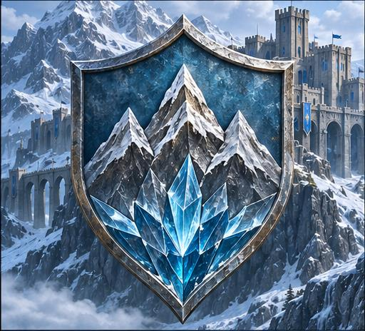
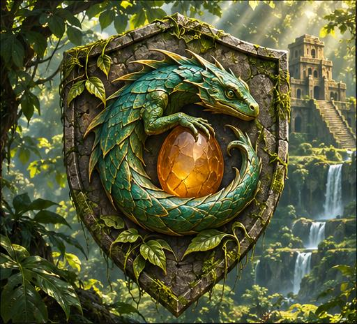
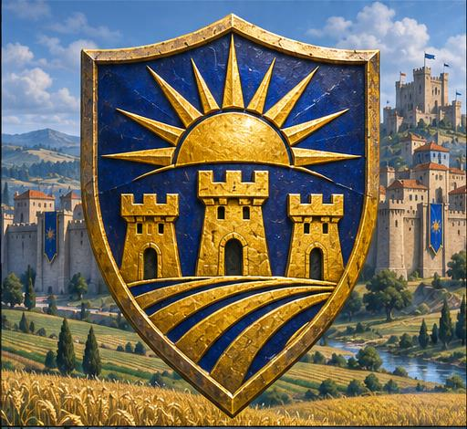
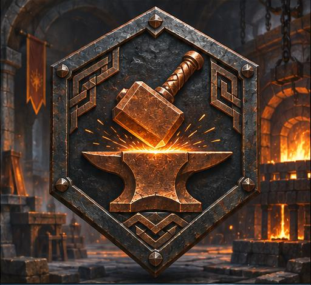
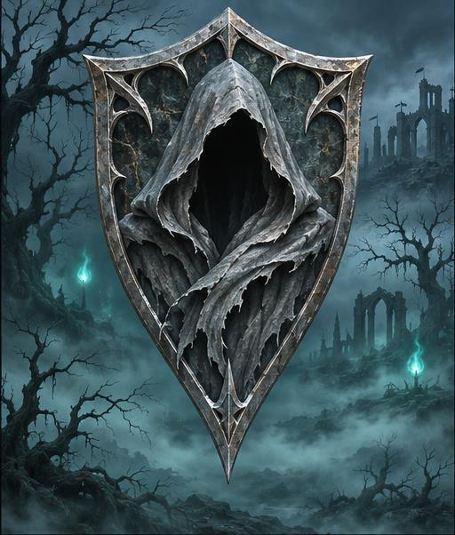
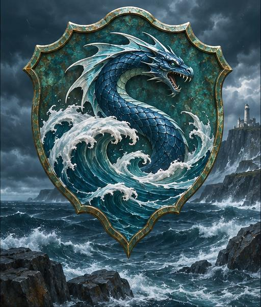

Ewiger Berg
Steinwälle durchziehen das Gebirge. Unter den Festungen folgen Stollen den Adern glitzernder Mineralien.
Fraktionen sollen eigenständig und wiedererkennbar sein – mechanisch, visuell und begrifflich. Die Tiefenschmiede sind die erste Referenzrasse.

Steinwälle durchziehen das Gebirge. Unter den Festungen folgen Stollen den Adern glitzernder Mineralien.

Zwischen den alten Tempeln wächst der Wald immer dichter. In seinem Schutz entstehen neue Tiernester, und seltene Pflanzen schlagen Wurzeln.

Straßen verbinden befestigte Siedlungen mit ihren Handelsplätzen. Vor den Stadtmauern erstrecken sich bestellte Felder.

Stein, Metall und Feuer prägen die zwergische Kultur. In ihren Werkstätten verbinden die Tiefenschmiede Schmiedekunst und Runen. Ihre Bauten sind für die Ewigkeit gedacht.

Hinter der silbernen Kapuze liegt Dunkelheit. Im Nebel zwischen kahlen Bäumen und den Dächern der Siedlung schimmert fahles Licht.

Küstenbewohner, Meerespriester und Wasserwesen bilden eine amphibische Kultur. Strömungen und Gezeiten bestimmen das Verhalten ihrer Anhänger. In trockenen Regionen stößt ihre Macht an Grenzen.